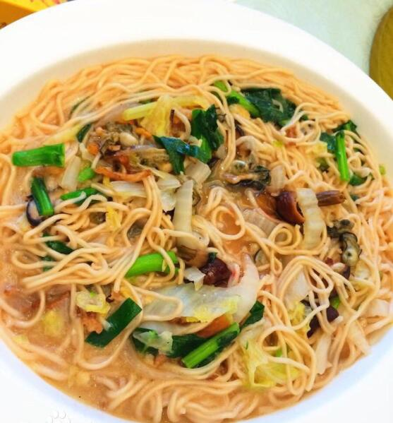

莆田美食
红团
 莆田沿海有“做岁”吃“红团”、“番薯起”的习俗。“红团”是沿海人们传统喜庆节日、过年时不可或缺的小吃，过节特别是过年时家家户户都做。在莆田沿海，“红团”不但是方便美味的特色食品，也可以作为过年送礼的佳品或是祀神祀祖先的供品
莆田沿海有“做岁”吃“红团”、“番薯起”的习俗。“红团”是沿海人们传统喜庆节日、过年时不可或缺的小吃，过节特别是过年时家家户户都做。在莆田沿海，“红团”不但是方便美味的特色食品，也可以作为过年送礼的佳品或是祀神祀祖先的供品
莆田沿海有“做岁”吃“红团”、“番薯起”的习俗。“红团”是沿海人们传统喜庆节日、过年时不可或缺的小吃，过节特别是过年时家家户户都做。在莆田沿海，“红团”不但是方便美味的特色食品，也可以作为过年送礼的佳品或是祀神祀祖先的供品
西天尾扁食
西天尾扁食从皮到馅通通是纯手工，尤其是皮的做法极其麻烦：必须将猪排骨上的肉耐心地剔下，然后用木槌使劲捶打，通常2斤肉至少得捶打1个小时，等锤成浆糊状后，加入木薯粉，再用木棒继续捶打，直到它变成薄如纸张的扁食皮。而肉馅听起来也暗藏玄机——— 由猪前腿肉加入虾皮手工剁成，这扁食真所谓“千锤百炼”了，无怪乎皮Q肉鲜。
莆田卤面

卤面，是莆田的一道传统美食，以江口卤面最为出名，一般用于重要来宾接待，被称为地道的莆田卤面。现如今，卤面已经成为莆田人结婚喜宴上必备的一道菜，也是家家户户过年时必备的一道菜，亦是莆仙在外人士有遇到莆田饭馆必点的一道菜
炝肉
炝肉，是福建莆田民间特有一道特色传统名肴。肉质细腻，味道鲜美，制作原料主要有猪里脊肉等。名曰“炝（qiàng ）肉”，而大多数莆田人喜欢把炝读成chāng。如果你按照正确读音qiàng读出，大部分当地小吃店会难以理解。做法虽说简单方便，但有不少釉奥妙藏在其中。如果不是得其真传，要做出同样的品质和味道很难的。
焖豆腐
焖豆腐，是莆田的一道特色菜，以清淡素雅、别有风味见长，更是老年人保健食疗的一道名菜。将豆腐切成小块；葱姜切丝；炒锅注油烧热，下入葱姜丝炝锅，倒入豆腐，加精盐、水、胡椒粉，小火焖至豆腐入味，淋香油，撒味精即可。